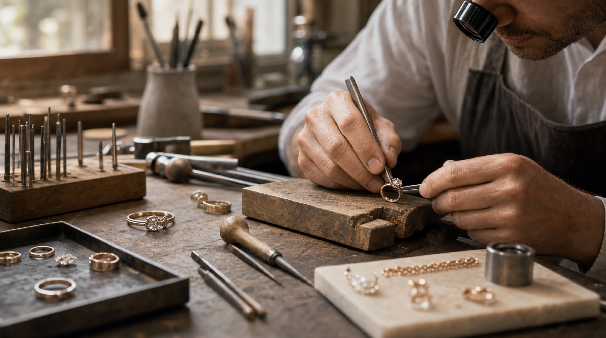
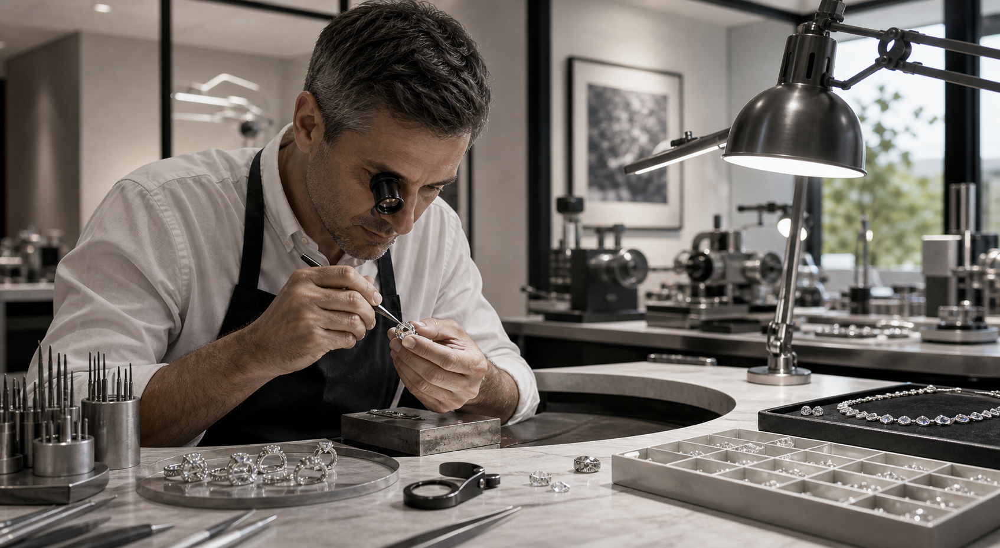

Jewelry Manufacturing
Quiet luxury built in the workshop, one detail at a time.
From metal preparation to setting and finishing, every piece is shaped to feel balanced, modern, and lasting. The manufacturing process is where design intention becomes physical reality, and where craft discipline protects the promise made by the stone itself.

Our workshop process combines hand-finishing discipline with modern production standards for consistency and elegance. Each stage is intended to preserve proportion, material integrity, and the clean lines that define a refined finished piece.
Rings, necklaces, bracelets, earrings, and statement timepieces are developed with a measured, gallery-like sense of proportion. Whether the result is bespoke or collection-based, the emphasis remains the same: clarity of design, quality of finish, and a piece that feels considered from every angle.